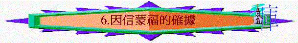

第六課 因信蒙福的確據
〔三：１－１４〕
本課要旨：第一至二章針對加拉太人的軟弱，保羅為他所傳的福音來源及使徒職份辯論後，便開始辯論福音真理的內容－－因信稱義。在三、四章中他用多方面的辯論和引證來帶出此真理。本課將集中看加拉太人得著聖靈的經驗與，及因信稱義之法在舊約中的根據。
１．保羅在第三章的開始：
ａ．用了多少質問句﹖
ｂ．那個字眼多次的出現﹖
ｃ．他質疑些甚麼﹖
ｄ．保羅以此作為引言有何用意﹖
ｉ．
ｉｉ．
ｉｉｉ．
２．請留意本書的第二個十字架。保羅兩次說加拉太人是「無知」，他們究竟無知在甚麼地方﹖保羅又是否形容得太過分呢﹖〔三：１，１４〕（註一）
３．請一位組員講述信徒如何及何時獲得聖靈。〔三：２；弗一：１３－１４〕
４．「靠聖靈入門」與「靠肉身成全」有何分別﹖〔三：３〕（註二）
５．論到加拉太人的受苦：
ａ．他們的受苦是在未信主前還是在信主以後呢﹖〔三：４〕
ｂ．保羅為何質問他們的受苦是否徒然﹖
６．比較〔三：２〕及〔三：５〕。保羅正強調甚麼信息﹖〔三：５〕（註三）
７．「正如亞伯拉罕．．．」，可見此處是連接上文〔三：１－５〕的，但保羅為何忽然論及亞伯拉罕呢﹖〔三：６；參創十五：６〕
８．請填充：〔三：６－９〕
ａ．亞伯拉罕 _________ 神，這就算為他的義。
ｂ．_________ 就是亞伯拉罕的子孫。
ｃ．_________ 和 _________ 亞伯拉罕一同得福。
９．亞伯拉罕是憑甚麼稱義和得福﹖我們又如何與亞伯拉罕連上關係呢﹖〔三：６－９；參羅四：９－１２〕
10．「萬國因你（亞伯拉罕）得福」，這「福」應指甚麼福﹖〔三：８〕
11．保羅指出人類分別行走著哪兩條路﹖走這兩條路的結果分別如何﹖〔三：９－１０；參申廿七：２６〕
ａ．_________ 與 _________
ｂ．一條是 _________ ，一條是 _________
12．在〔三：１０－１４〕中，保羅每次辯論有關「稱義」的論點時，都引用舊約經文作原因。請填好下表認識所引經文：
| 經文 | 稱義論點 | 原因 |
| 三：１０ | 1. ________________，都是被咒詛的 | 因為．．．凡不常照律法．．．去行，就被咒詛〔申廿七：６〕 |
| 三：１１ | 2.
沒有一個人_____________
在神面前稱義 |
3.義人 _________________________〔哈二：４〕 |
| 三：１２ | 4.律法原 _____________ | 5. _____________，就必因此活著〔利十八：５] |
| 三：１３ | 6.基督既為我們__________贖出我們 7.._______________ |
凡掛在木頭上都是被咒詛的〔申廿一：２３〕 *
|
| 三：１４ | 8.這便叫亞伯拉罕的福，因___________可以臨到 9. ___________ | 得著所應許的聖靈 |
13．為何這裡說「行律法為本的」都是被咒詛的﹖注意「凡不」、「常照」、「一切」等字眼。〔三：１０；參申廿七：２６〕
14．請留意「義人因信得生」是全段的籲句。〔三：１１〕
15．〔三：１２〕指出行律法之路，而事實上，世上究竟有沒有人能全守律法呢﹖
16．從〔三：１３；林後五：２１；彼前二：２４〕看主耶穌基督：
ａ．祂為我們作成了甚麼事﹖
ｉ．
ｉｉ．
ｂ．祂如何作成這些事﹖
17．「亞伯拉罕的福」指甚麼﹖這又與「得著所應許的聖靈」有何關係﹖〔三：１４〕
18．保羅在此能夠靈活的連續運用六處舊約經文，作為真理的辯證，試反省我們平日是如何運用聖經的。
第六課附註：
註一：「活畫」NASB譯 " publicly portrayed " 意即公開地描繪了。
註二：「成全」KJV 譯 " made perfect "。
註三：「異能」" miracles " 是眾數。
參考答案
第六課：因信蒙福的確據
１．ａ．五句；ｂ．聖靈
ｃ．保羅質疑加拉太人當初是如何靠聖靈得生，後來卻不繼續靠聖靈而反靠律法行事。
ｄ．保羅的用意是：
ｉ．叫他們回憶昔日信主時受苦之情。
ｉｉ．此提醒他們以往在他們中間所經歷的神蹟，乃是聖靈所行的，卻非因他們靠行律法而行的。
ｉｉｉ．先從加拉太人得救的經驗著手，帶出「如何領受聖靈」（是因信）此點作開始的討論。
２．他們的無知是因為有關耶穌基督釘十架的真理，是他們早已明白的，保羅當初也對他們傳得很清楚；而他們卻仍然受迷惑，偏向律法主義，故被責備為無知。因此保羅對他們以「無知」來形容實不是過分。
３．信徒獲得聖靈是在信主時立刻得到的。
４．「靠聖靈入門是指得救重生的經歷，人因信基督而聖靈內住〔約七：３８－３９〕。「靠肉身成全」意即信徒在行走屬靈的道路中不繼續靠聖靈成全（活出聖潔），而想靠屬肉身的禮儀、割禮、行律法規條等方法去走屬靈的路、去作完全人。保羅的論點是既然得救非憑自力而得，信主以後的行事、作完全人也非靠自力去成全，乃繼續靠聖靈。
５．ａ．聖經沒有明講，但但按〔徒十四：９－２２〕所記載保羅到加拉太各城傳道時，受猶太人（律法主義者）的逼迫，因此加拉太人應是在信主後也與保羅同心受苦。另參〔加四：１５〕。
ｂ．保羅主要叫他們回想當日為了福音而受苦，今天卻跟隨異端，以至仍以為自己是來得救，那麼他們以往所受的苦豈非是徒然麼﹖
６．〔三：２〕提及得聖靈及〔三：５〕提及神蹟發生在他們中間，保羅調這兩件事都是因著聽福音而得著，非行律法可以得著－－這是他們十分清楚的事！因此是駁不到的。在加拉太省中記載的神蹟可參〔徒十三：４－１２；十四：８－１１〕。
７．保羅指出加拉太人因信得聖靈，就如亞伯拉罕因信而稱義一樣。亞伯拉罕被神稱為義在先，在十三年後才開始受割禮。他是受割禮的第一人，也先因信稱義，何況其他的人更是因信稱義，非靠割禮稱義。
８．ａ．信；ｂ．以信為本；ｃ．以信為本和有信心的。
９．他是憑「信」稱義和得福，我們也像他是「以信為本」的，所以也能因「信」稱義和得福。
10．從〔三：８〕上半節及〔三：９〕來看，這福乃是指因信稱義的福。神要外邦人（萬國）都因亞伯拉罕因信而稱義。
11．ａ．信心之路與律法之路。
ｂ．一條是蒙福之路，一條是得咒詛之路。
12．1. 凡以行律法為本的；2. 靠行律法；3. 因信得生；4. 不本乎信；
5. 行這些事；6. 受了咒詛；7. 脫離律法之咒詛；8. 基督耶穌；
9. 外邦人。
13．凡人以行律法為得救或稱義之法，就要「常照」律法行、也行「一切」的律法，即是全守律法；不然就要受公義的律法之要求，受刑、受咒詛及審判。
15．世上除了主耶穌之外，是沒有一人能全守律法的！
16．ａ．ｉ．受了咒詛；ｉｉ．贖我們脫離律法的咒詛。
ｂ．主是以被掛在木頭上，以無罪代替有罪，來作成此二事的。
17．〔三：８〕已指出神早已定意叫外邦人因信稱義，而從〔三：１４〕上下文看亞伯拉罕的福與得著所應許的聖靈的指同樣的事。亞伯拉罕因信被稱為義及得福，如今因基督所成就的代贖（因〔三：１４〕開頭說「這便叫．．．」）而臨到外邦人以致一同得福。所以如今人能因相信而得聖靈，正顯明了神悅納外邦人，要他們得福氣。
18．我們應努力追求常運用聖經，影自己的生活，更去向人辯明真理。